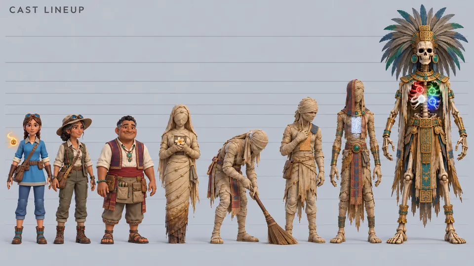

Figuren
Größenvergleich
Alle Figuren nebeneinander auf einer Grundlinie, im echten Größenverhältnis.

Von links nach rechts
Wer wie groß ist
| Figur | Maßstab |
|---|---|
| Kaya | Groß und schlank, etwa sieben Kopflängen; K'in schwebt an ihrer rechten Schulter |
| Dr. Isabel Kaan | Klein und drahtig, etwas kleiner als ihre Tochter |
| Oxlahun | Mittelgroß, breit und kräftig |
| Ix Nicte | Etwa so groß wie Kaya, den Kopf geneigt |
| Ah Zac | Aufgerichtet so groß wie Kaya; gebückt reicht er ihr nicht bis zur Schulter |
| Kan Uk | Hager, leicht gebückt, etwas kleiner als Ah Kuk |
| Ah Kuk | Sehr hager, einen Kopf größer als Oxlahun |
| Der Hohle Hohepriester | Anderthalbmal so groß wie ein großer Mann, mit Kopfschmuck noch größer |
Koop-Konzept
Nicht immer allein
Ascent of the Sun Temple spielt man allein. Diese Bilder zeigen eine Idee für später: Freunde, die mit Kaya klettern.